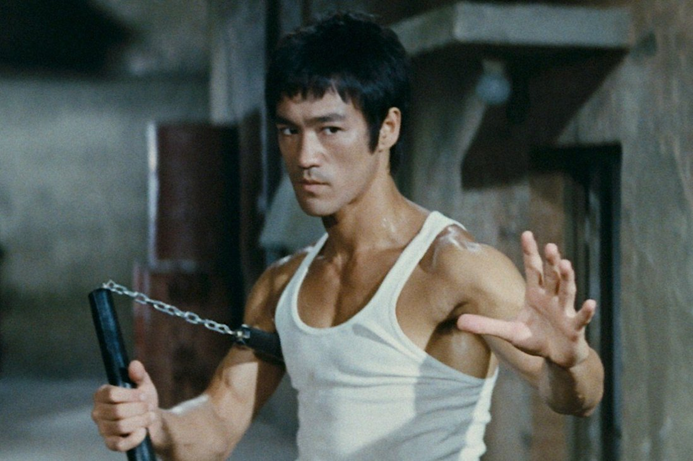

Bruce Lee was a Hong Kong American martial artist, actor, director, martial arts instructor and philosopher.Bruce Lee is a film and martial arts legend known for his lightning quick fighting style, his grunts and facial expression he made while fighting, his pithy philosophical statements and more.He changed the film industry in Hong Kong and brought Kung Fu into Western popular culture. He was a man of intense energy, with huge ambitions, who pushed his body farther than it ever wanted to go in order to reach new heights. The superpower which i liked from him is to be keep positive attitude and strengthen your body and mind to face any situation.
